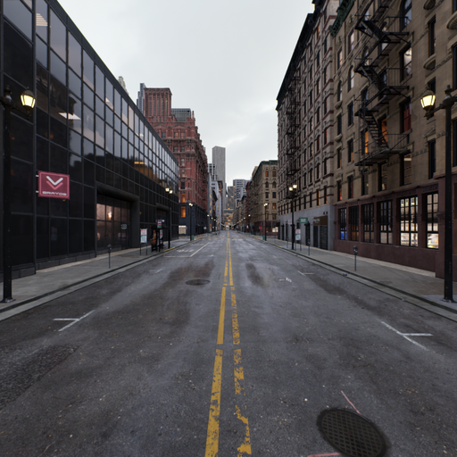
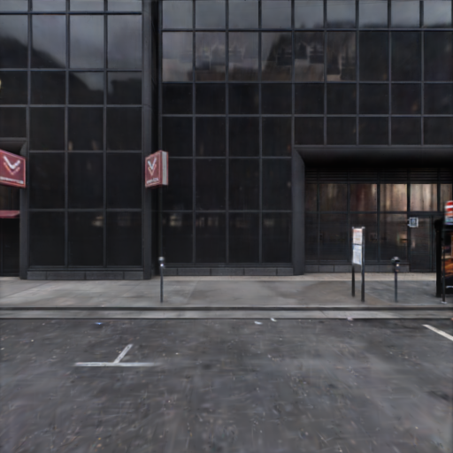
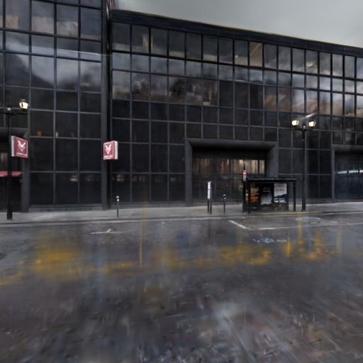
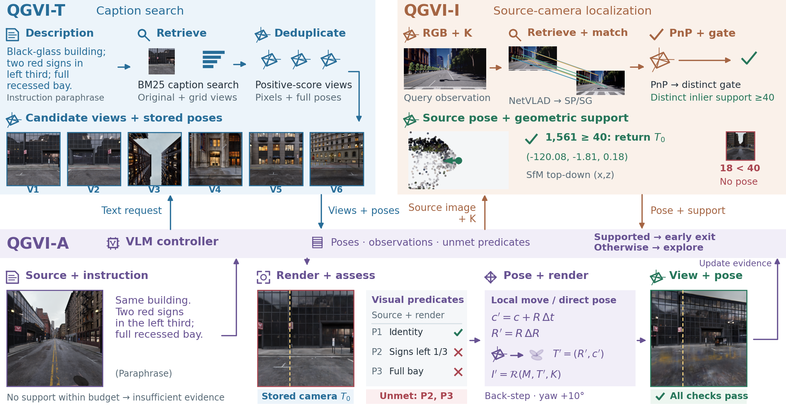

Find a matching view.
Search captions attached to known cameras. Return candidate views and their stored poses.
QGVI-T · BM25 retrieval+ 3D SCENE QUERYING · 2026
Retrieval, localization,
and agentic view search.
Ask with words, locate with an image, or describe the view you want. QGVI connects your query to a camera inside an existing Gaussian scene.
1 Northwestern Polytechnical University
2 King Abdullah University of Science and Technology

Same building. Both signs in the left third. Keep the complete recessed bay in view.
Instruction paraphrase

Selected observations from a recorded run. Predicate checks are model assessments.
Search captions attached to known cameras. Return candidate views and their stored poses.
QGVI-T · BM25 retrievalMatch an image to the scene. Accept the geometric pose only when enough distinct keypoints support it.
QGVI-I · geometric localization + gateUse retrieval and localization tools, inspect renders, and update the camera to satisfy a requested view.
QGVI-A · adaptive view searchEXPLORE / 01
Live caption search and recorded examples.
Everything here runs in your browser.
Loading the selected demo views…
BM25 searches a small, selected caption index. These examples are not the full evaluation database.
Choose a saved query to inspect its evidence and acceptance decision. This page does not localize newly uploaded images.
Step through the actual saved tool calls and observations. Playback does not run a model or render new images.
The demo uses selected cached assets. Browser search is real; localization and camera exploration are replays. The research pipeline uses models and rendering hardware.
METHOD / 02
Views and cameras provide a common interface for search, geometric evidence, and exploration.

The text interface ranks captions associated with calibrated observations. It returns stored camera poses rather than claiming unique source-camera recovery from ambiguous language.
The image interface adds a fixed distinct-keypoint gate to the LoGS geometric initializer. An accepted camera stays unchanged; unsupported estimates are rejected.
The agent can exit after a direct answer, or continue with tool calls and camera exploration. Its budget also allows an insufficient-evidence outcome.
EVIDENCE / 03
Nine development scenes.
Three tasks, with distinct correctness criteria.
QGVI-A finds a model-assessed valid target view on 226 of 250 queries. One additional returned view is uncertain.
QGVI-I on a cohort with 1,839 in-map and 1,839 out-of-map queries. Correctness uses 1 m / 2°; five scene scales are estimated.
At 72.8% coverage under common GPT assessment. Uncertainty remains explicit rather than being counted as success.
The same 250 image-and-instruction queries. Compare whole policies: available information and decision budgets differ.
| Method | Correct returns ↑ | Answer precision ↑ | Coverage |
|---|---|---|---|
| Retrieve + Select | 26.8% | 98.53% | 27.2% |
| Fixed Search + Verify | 17.6–18.0% | 88.0–90.0% | 20.0% |
| QGVI-A | 90.4–90.8% | 92.62–93.03% | 97.6% |
Text and target-view correctness is model-assessed. Intervals express unresolved judgments, not confidence intervals. RGB correctness uses geometric errors; five scenes use DA3-estimated metric scales. These are development cohorts, and percentages across different tasks are not directly comparable. Grid-view augmentation did not establish a consistent retrieval benefit; photometric refinement did not improve threshold success and worsened median pose errors on this cohort. See the paper for protocols, rejection metrics, and limitations.
READ / 04
Methods, all nine scenes, matched controls,
and the limitations behind the headline results.
Updated 3 November 2026 · Includes supplementary material
@misc{xiong2026qgvi,
title = {Queryable Gaussian View Index:
Retrieval, Localization, and Agentic View Search},
author = {Xiong, Tianyu and Li, Rui and Yang, Jiaqi},
year = {2026},
note = {Preprint}
}